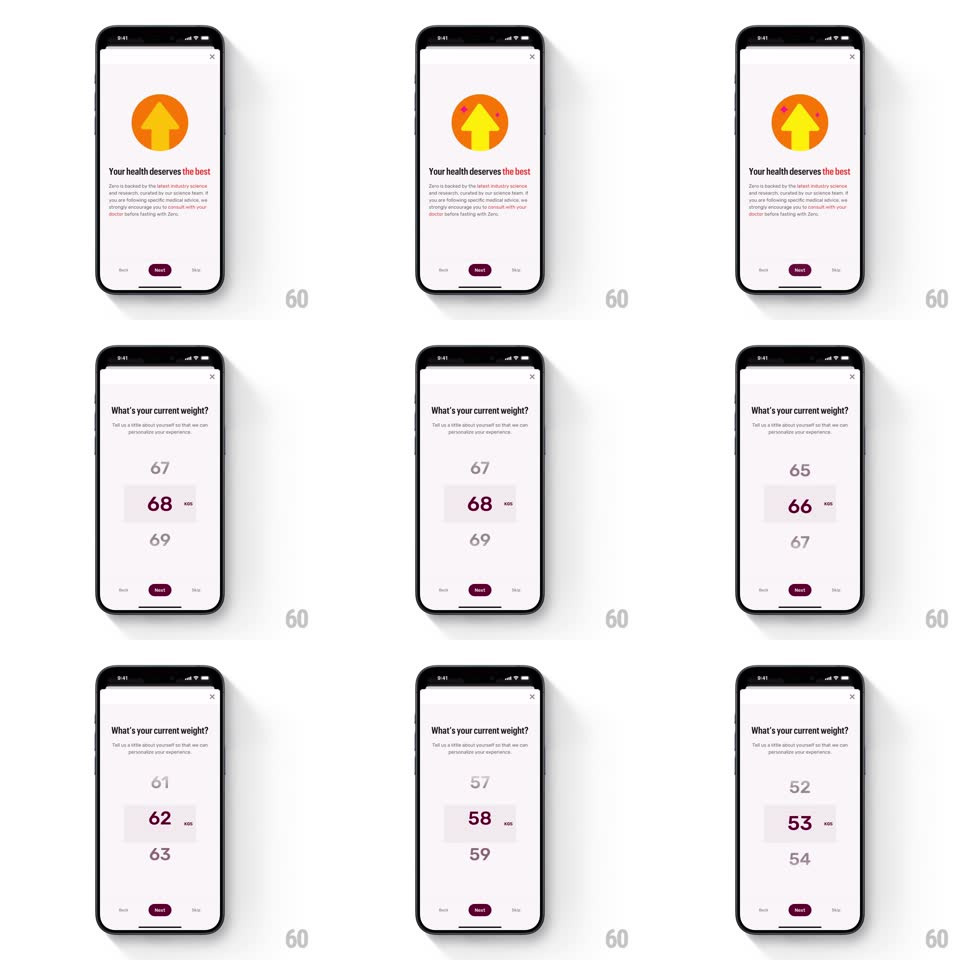

Media
Frame-by-frame

Rebuild this interaction 1:1: Zero's weight picker - a vertical wheel of numbers that scales and fades with distance from center, snapping to the selected weight.

Rebuild this interaction 1:1: Zero's weight picker - a vertical wheel of numbers that scales and fades with distance from center, snapping to the selected weight.
## Integration
Integration: stack-agnostic spec - springs given as stiffness/damping, timed motions as duration + curve; map every value to your framework and animation library of choice.
## Scene
A light onboarding screen ("What's your current weight?" with a sub-line, Next pill at bottom). Center: a vertical drum of weight values - the center value is large and dark maroon with a small "KG" tag beside it; values above and below shrink and fade (67 / 68 / 69 stepping through 52-70 as it scrolls).
## Motion spec
Pattern: vertical drum picker with depth scaling.
- Drag: values scroll 1:1 vertically with momentum on release (decay ~0.94/frame); each value's scale (0.55-1.0) and opacity (0.25-1) interpolate continuously with its distance from the center line - a lens effect, not discrete states.
- Snap: on release the drum settles to the nearest integer (spring ~380/24) with a light haptic tick per passed value and a slightly stronger one on snap.
- The center value sits on a soft highlight band (a faint gray pill behind the center row, fading in when scrolling stops, 200ms).
- The "KG" tag tracks the center value's trailing edge, sliding horizontally as the digit count changes (spring ~360/26).
- The drum edges fade into the background (vertical gradient mask) so values dissolve at top and bottom.
- Rubber-band at range limits (0.35x resistance past min/max) with spring-back.
## Calibration
- Only the center value is fully opaque and maroon; everything else is gray - the hierarchy must survive fast flicks.
- Haptics tick per unit even during fast scrolls (coalesced to max 1 per 40ms).
## Reduced motion
Values scroll without scaling; snaps instantly.
## Don't miss
- The picker is the whole screen - no dial, no +/- buttons; the drum IS the control.
- The previous screen's orange circle hands off via a shared-element shrink into the header area before the wheel appears.